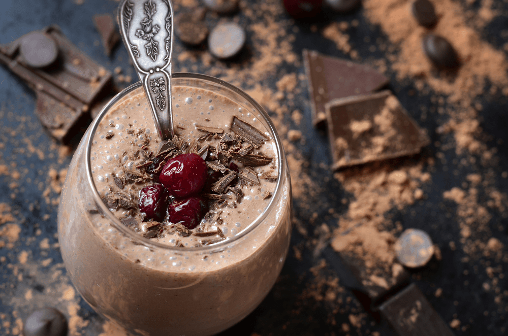
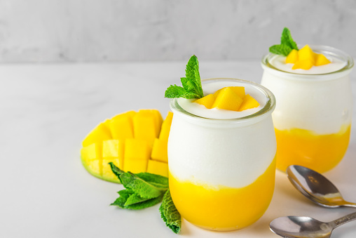
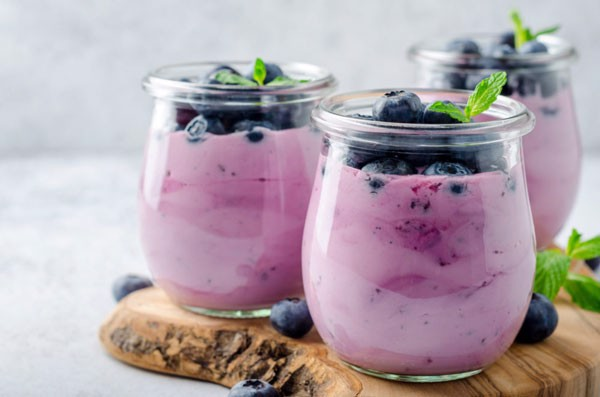
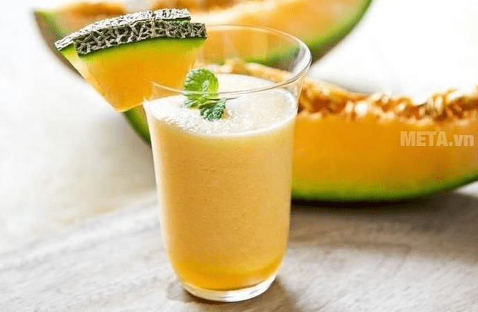
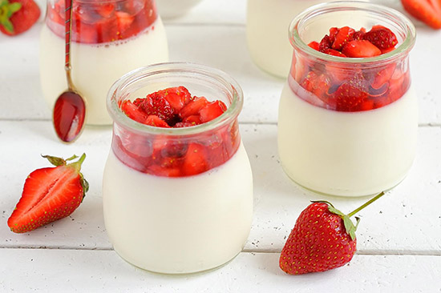
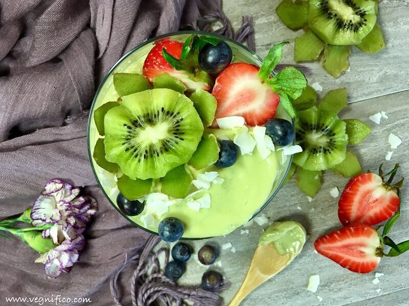
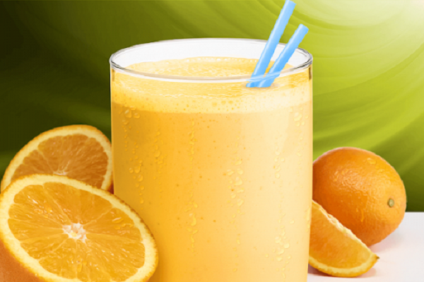

Sản phẩm truyền thống
Sữa chua vị Chocolate
Bingsu Chocolate là một món tráng miệng đá bào nổi tiếng từ Hàn Quốc, với sự kết hợp hoàn hảo của đá bào mịn, chocolate đậm đà và các loại topping phong phú. Được làm từ đá bào mịn như tuyết, bingsu thường có lớp sốt chocolate ngọt ngào rưới lên trên, kết hợp cùng socola vụn hoặc bột cacao để tăng thêm hương vị Xem chi tiết
Số lượng:Sữa chua Trái cây

Bingsu Chocolate là một món tráng miệng đá bào nổi tiếng từ Hàn Quốc, với sự kết hợp hoàn hảo của đá bào mịn, chocolate đậm đà và các loại topping phong phú. Được làm từ đá bào mịn như tuyết, bingsu thường có lớp sốt chocolate ngọt ngào rưới lên trên, kết hợp cùng socola vụn hoặc bột cacao để tăng thêm hương vị Xem chi tiết
Số lượng:Sữa chua Nha đam

Bingsu Chocolate là một món tráng miệng đá bào nổi tiếng từ Hàn Quốc, với sự kết hợp hoàn hảo của đá bào mịn, chocolate đậm đà và các loại topping phong phú. Được làm từ đá bào mịn như tuyết, bingsu thường có lớp sốt chocolate ngọt ngào rưới lên trên, kết hợp cùng socola vụn hoặc bột cacao để tăng thêm hương vị Xem chi tiết
Số lượng:Sản phẩm mới
Sữa chua vị Xoài
Bingsu Chocolate là một món tráng miệng đá bào nổi tiếng từ Hàn Quốc, với sự kết hợp hoàn hảo của đá bào mịn, chocolate đậm đà và các loại topping phong phú. Được làm từ đá bào mịn như tuyết, bingsu thường có lớp sốt chocolate ngọt ngào rưới lên trên, kết hợp cùng socola vụn hoặc bột cacao để tăng thêm hương vị Xem chi tiết
Số lượng:Sữa chua vị Việt quất
Bingsu Chocolate là một món tráng miệng đá bào nổi tiếng từ Hàn Quốc, với sự kết hợp hoàn hảo của đá bào mịn, chocolate đậm đà và các loại topping phong phú. Được làm từ đá bào mịn như tuyết, bingsu thường có lớp sốt chocolate ngọt ngào rưới lên trên, kết hợp cùng socola vụn hoặc bột cacao để tăng thêm hương vị Xem chi tiết
Số lượng:Sữa chua vị Dưa lưới
Bingsu Chocolate là một món tráng miệng đá bào nổi tiếng từ Hàn Quốc, với sự kết hợp hoàn hảo của đá bào mịn, chocolate đậm đà và các loại topping phong phú. Được làm từ đá bào mịn như tuyết, bingsu thường có lớp sốt chocolate ngọt ngào rưới lên trên, kết hợp cùng socola vụn hoặc bột cacao để tăng thêm hương vị Xem chi tiết
Số lượng:Sản phẩm trái cây miền nhiệt đới
Sữa chua vị Dâu
Bingsu Chocolate là một món tráng miệng đá bào nổi tiếng từ Hàn Quốc, với sự kết hợp hoàn hảo của đá bào mịn, chocolate đậm đà và các loại topping phong phú. Được làm từ đá bào mịn như tuyết, bingsu thường có lớp sốt chocolate ngọt ngào rưới lên trên, kết hợp cùng socola vụn hoặc bột cacao để tăng thêm hương vị Xem chi tiết
Số lượng:Sữa chua vị Kiwi
Bingsu Chocolate là một món tráng miệng đá bào nổi tiếng từ Hàn Quốc, với sự kết hợp hoàn hảo của đá bào mịn, chocolate đậm đà và các loại topping phong phú. Được làm từ đá bào mịn như tuyết, bingsu thường có lớp sốt chocolate ngọt ngào rưới lên trên, kết hợp cùng socola vụn hoặc bột cacao để tăng thêm hương vị Xem chi tiết
Số lượng:Sữa chua Cam
Bingsu Chocolate là một món tráng miệng đá bào nổi tiếng từ Hàn Quốc, với sự kết hợp hoàn hảo của đá bào mịn, chocolate đậm đà và các loại topping phong phú. Được làm từ đá bào mịn như tuyết, bingsu thường có lớp sốt chocolate ngọt ngào rưới lên trên, kết hợp cùng socola vụn hoặc bột cacao để tăng thêm hương vị Xem chi tiết
Số lượng: